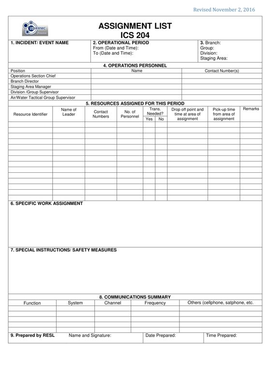

PURPOSE: The ICS 204 informs the Division and Group supervisors of incident assignments. Once the Command and General Staff agree to the assignments, the assignment information is given to the appropriate Divisions and groups.
PREPARATION: For major incidents, the ICS 204 is normally prepared by the Resource Unit Leader (RESL) using the guidance of ICS 202, 215 and based on the directives of the Operations Section Chief (OSC). It may also be initiated by the Planning Section Chief (PSC) and the OSC.
DISTRIBUTION: The ICS 204 is duplicated and attached to the ICS 202 and given to all recipients as part of the Incident Action Plan (IAP). All completed original forms must be given to the Documentation Unit.

BLOCK NO. |
BLOCK TITLE |
INSTRUCTIONS |
| 1 | Incident / Event Name | Enter the name assigned to the incident / event. |
| 2 | Operational Period | Enter the start date (mm-dd-yyyy) and time (24 hour format) and end date and time for the operational period to which the form applies. |
| 3 | Branch Group Division Staging Area |
This block is for use in a large IAP for reference only. Enter the appropriate alphanumeric abbreviation as appropriate. Eg. Branch 1, Division A, etc. |
| 4 | Operations Personnel | Enter the names, agencies/offices, and contact numbers of the OSC and the applicable Branch Director (s) and Division / Group Supervisor(s). Note that there may be two or more divisions or groups during an operational period. Use additional 204s as needed. |
| 5 | Resources assigned for this Period | Enter information about resources assigned for this operational period |
| Resource Identification | Enter the breakdown of resources assigned for the Branch / Division / Group / Staging Area. Indicate the resource identification and specify if you are going to use single resource, strike team or task force for each. If strike team or task force, enter in the succeeding blocks the breakdown of resources composing the said strike team or task force. Note: The breakdown of resources for this block shall be obtained from the Operational Planning Worksheet (ICS 215). Remember to maintain the maximum span of control. |
|
| Name of Leader | Enter the name of the leader assigned for the unit or resource. Note: The name of leader for every single resource, strike team or task force indicated in this form shall be entered. |
|
| Contact Details | Enter the contact details of the leader. Note: The contact details of leader for every single resource, strike team or task force indicated in this form shall be entered. |
|
| No. of Personnel | Enter the number of personnel for the unit or resource. |
|
| Trans. Needed? | Indicate “Y” for yes or “N” for no if the resources requires to be transported |
|
| Drop off point and time at area of assignment | Enter special notes or directions specific to this resource. If required, add remarks to indicate: (1) specific location/time where the resources should be drop off/picked up; (2) special equipment and supplies that will be used or needed; (3) whether or not the resource received briefings; (4) transportation needs; or (5) other information. |
|
| Pick-up time from area of assignment | Enter special notes or directions specific to this resource. If required, add remarks to indicate: (1) specific location/time where the resources should be picked up. |
|
| Remarks | Enter other important details about the resource. |
|
| 6 | Specific Work Assignment | Enter statement of tactical objectives to be achieved within the operational period by the personnel assigned to this Division or Group. Also indicate the specific locations where they will perform their assignment. Note: The information for this block can be referred from the Operational Planning Worksheet (ICS 215). |
| 7 | Special Instructions/ Safety Measures | Enter a statement noting any safety precautions to be exercised or other important information. Note: The information for this block can be referred from the Operational Planning Worksheet (ICS 215). |
| 8 | Communications Summary | Enter specific communications information (including emergency numbers) for this Branch / Division / Group. If radios are being used, enter function (command, tactical, support, etc.,) frequency, system, and channel from the Incident Radio Communications Plan (ICS 205). In light of potential IAP distribution, use sensitivity when including cellphone numbers. Add a secondary contact (phone number or radio)if needed. |
| 9 | Prepared by RESL | Enter complete name of the RESL, signature, date (mm-dd-yyyy), and time (24 hour format) the form was prepared and completed. Note: The form is prepared usually by the RESL. In the absence of RESL, it shall be prepared by the PSC or OSC. |